21 Class 21: CAD, Meshing, and Discretization Choice
Where the mesh comes from, qualities of a good mesh, and efforts to improve this process
The a finite element method requires a basis to approximate the solution to a problem of interest. These bases are defined using the structure of a number of cells glued together to approximate the intended shape as a mesh.
Meshes are typically created by pushing a computer-aided design (CAD) model through a specialized software, though sometimes they come as the result of processing geographic data or point cloud information. To get to a finite element mesh, somebody likely designed the part in CAD and somebody chose how to chop it up. Both of decisions are then baked into your answer before you assemble a single element matrix. This class is a very brief introduction to those two steps, as well as a proposed pipeline to use a the CAD model for analysis directly without the use of an intermediary mesh.
21.1 What a mesh is made of
For traditional FEM, mesh elements are convex triangles or quadrilaterals in two dimensions, or convex tetrahedra, pyramids, prisms, or hexahedra in three dimensions.
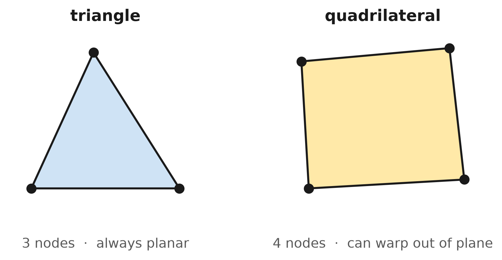
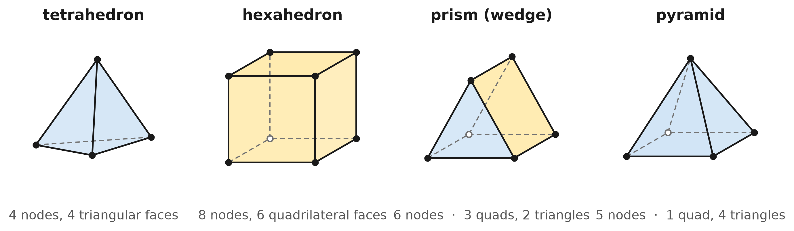
21.1.1 Triangles and tetrahedra: easy to get but not always what you want
Generating a good triangular or tetrahedral mesh of an arbitrary shape is in many senses a solved problem. The algorithms to generate these are robust, automatic, and in some cases decades old. You can frequently hand a tet mesher a complicated part and get a usable mesh without user intervention, even if the model itself has problems. Local refinement on these meshes is also easily done by splitting a single tetrahedron and patching up its neighbours.
Triangular and tetrahedral elements (together called simplicial elements) work well for a large class of problems. However, they may perform poorly in some cases, such as
- Directional physics. In a boundary layer the solution changes dramatically across the layer and barely at all along it. What you want there is a stack of elements aligned with the wall. Tetrahedra lack capacity to effectively operate for these directional problems, and typically give poor results here.
- Nonlinear and constrained problems. Linear tetrahedra are notoriously stiff when the material is nearly incompressible or has gone plastic because there are not enough degrees of freedom per element to satisfy the constraint and still deform. This phenomenon is called locking and solutions using simplicial meshes are far too stiff compared to the actual solution without extensive mesh refinement.
21.1.2 Quadrilaterals and hexahedra: better elements but worse to build
A hex mesh will generally get you a given accuracy with far fewer elements, handles directional features gracefully, and behaves much better on the nonlinear problems above. The challenge is that automatic all-hex meshing of a general solid is not a solved problem. Real hex meshes are often built with substantial manual guidance — decomposing the part into mappable blocks by hand — and unstructured local refinement is challenging because you cannot split one hexahedron without propagating the change through a whole layer of its neighbours.
Prisms and pyramids are the glue. They are rarely the point of a mesh. A pyramid has a quadrilateral on one face and triangles on the others, which is exactly what you need to close the gap where a hex block meets a tet region. Prisms do the same job for extruded boundary layers sitting on top of a tet interior.
21.1.3 Meshes are usually straight, recent trends are going towards curvilinear representations
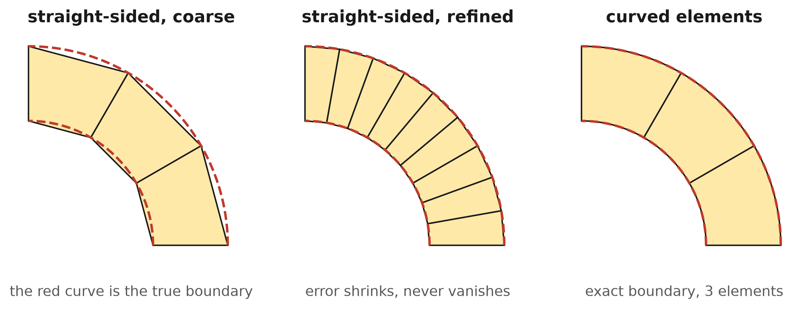
Most meshes in used in industry are piecewise linear, with straight edges, and flat faces. This allows for a simple representation and is directly usable for all finite element methods. However, this comes at the price of accurate geometry. For the quarter annulus of Class 20, this introduced a half-percent length error through geometry error, not quadrature error, and no refinement mechanism could address it. Curved (higher-order) meshes have extra nodes per edge so the element can bend to the real boundary, and they are becoming common wherever the geometry matters, including for boundary layers, electromagnetics, and anything run at high polynomial degree, where a straight-sided boundary caps convergence rate no matter how good the basis is.
21.1.4 More about mesh data structures
The above discussion describes what mesh elements are used. To learn more about how a mesh is actually described and how to navigate around a mesh, one should understand the half-edge data structure. The following is a good interactive page describing how surface meshes are defined and operate: jerryyin.info/geometry-processing-algorithms/half-edge.
21.2 Where meshes come from
A significant number of meshes are generated from a CAD model. Others come from measurement instead, such as a laser scan to produce a point cloud or a CT/MRI scan to produce voxels, both of which can be meshed. The CAD route is the most common one in traditional engineering design and will be discussed hereafter. While you should be aware that you can mesh other data, we will not cover this content in this class.
A CAD model stores smooth surfaces. A mesh stores kinked facets. Converting from CAD model to a mesh throws away exact geometry, which may affect both geometric and analysis precision.
21.2.1 Boundary representation
CAD describes a solid by describing only describing the outside surfaces. This is called a boundary representation, or B-rep, and the model is a collection of surfaces, many of which are cut in some form and then stitched together along shared edges so that they enclose a volume. There is no description of the inside. The solid is whatever the skin contains. On the occasion that a CAD model does not represent the outside of a volume, it is typically representative of the solid’s midsurface, and in these cases is called an open B-rep, whereas volume-enclosing B-reps are called closed B-reps or just simply B-reps.
Each surface of a B-rep is almost always a B-spline or NURBS surface. These are defined using the same kind of content learned in Class 12, where a spline surface is a mapping from a parametric square or rectangle into a curved patch in space,
\[ \underline{x}(u,v), \qquad (u,v) \in [0,1]^2 , \]
built from basis functions in \(u\) times basis functions in \(v\). (Note that here we typically use \(u\) and \(v\) for the parametric coordinates compared to \(\xi\) and \(\eta\) for the reference or parent coordinates.) The same tensor-productconstruction as is used for bilinear and biquadratic elements, is used for B-splines and NURBS, but just using a different basis, which will be discussed further below.
An example of a B-rep is shown in the widget below. The grey curves are isocurves, which are curves of constant \(u\) or constant \(v\) on each surface. They are the image of a grid in the parametric square, and they are the clearest way to see that a CAD surface is a mapped square. Cutting operations that mask parts of the curvilinear surfaces are called trimming curves, and can be turned on or off as well.
21.2.2 Gluing and trimming
Very few shapes of interest can be described by a single mapped square. The midsurface of the bracket above, for example, is built from five surfaces: a web, two fillets, and two flanges. CAD builds shapes like this from simpler surfaces using two operations, called gluing and trimming.
Gluing joins surfaces along shared edges. The violet curves in the widget mark the edges where one surface stops and the next one starts. Gluing records that the two edges are the same curve in space, so the model has no gap there. It can also record how smoothly the surfaces meet. In the bracket, for example, each fillet joins the web and its flange without a corner.
Trimming removes part of a surface. The designer draws a closed curve in the parametric domain of the surface, and only the part of the surface inside that curve is kept in the model. Every red curve in the widget is a trimming curve, including the bands removed from the top and bottom, the steps and chamfered corners on the flanges, and the holes. A hole is the simplest case. The surface is not rebuilt with a hole in it; instead, an ellipse is drawn in its parametric domain, and everything inside the ellipse is ignored.
Trimming does not delete any of the underlying surface. Checking isocurves into the trimmed parts in the widget shows the rest of each surface continuing underneath the trimmed regions. Figure 21.4 takes one face out of the bracket to show the full surface from which it was cut.
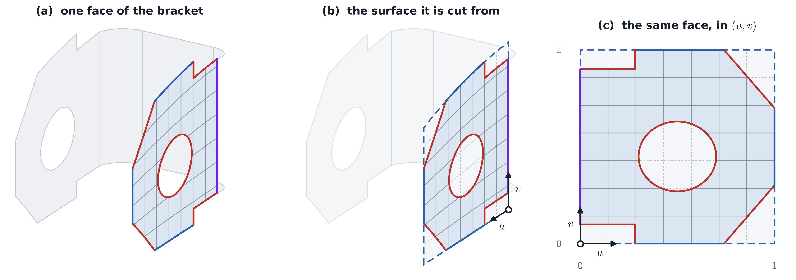
Nearly every CAD model is built in this way: a collection of tensor-product surfaces, each trimmed by curves in its own parametric domain, and glued to its neighbours along shared edges. This is an effective way to describe a shape, but it is difficult to use directly for analysis, as described next.
21.2.3 Why trimming complicates analysis
Suppose we tried to perform an analysis directly on the face in panel (c) of Figure 21.4, using the grid of its parametric domain as our elements. The cells of that grid are squares, but the trimming curves do not follow the cell edges, and instead cut directly through them.
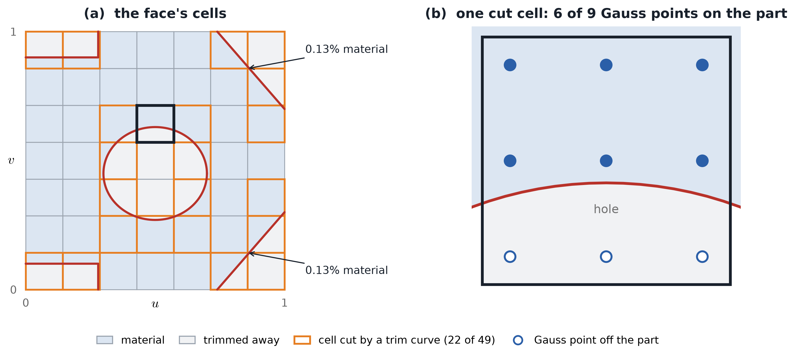
Each of the resulting problems relates to content from earlier in the course:
- Integration. The Gauss rules of Classes 10 and 20 integrate over a whole element. On a cut cell, part of the square is not material, and the part that is has a curved boundary. In panel (b), a third of the quadrature points fall inside the hole. A cut cell requires an integration rule built for its own shape, and constructing one for every cut cell is a significant amount of work.
- Slivers. A basis function whose support lies almost entirely in the trimmed region still has an unknown attached to it, even though it touches very little material, as in the corner cells. Its diagonal entry in the stiffness matrix is nearly zero compared with those of its neighbours, and the system of equations becomes poorly conditioned.
- Boundary conditions. In Classes 14 and 19, boundary conditions were assigned to the nodes and element edges lying on \(\Gamma_g\) or \(\Gamma_h\). Here the boundary of the part is the trimming curve, which runs through the middle of cells, so there are no nodes on it to which a boundary condition can be assigned.
- Seams that do not quite meet. Two glued faces each have their own trimming curve along the shared edge. These curves approximate the same edge in space but are generally not identical, so real models have small gaps and overlaps along their seams that a solver must tolerate.
21.2.4 Meshing the bracket
The usual alternative is to mesh the CAD surfaces rather than compute on them directly. A mesher works on the trimmed face, that is, on the part itself rather than on the square from which it was cut. Every element therefore lies inside the material, and every boundary is made up of element edges.
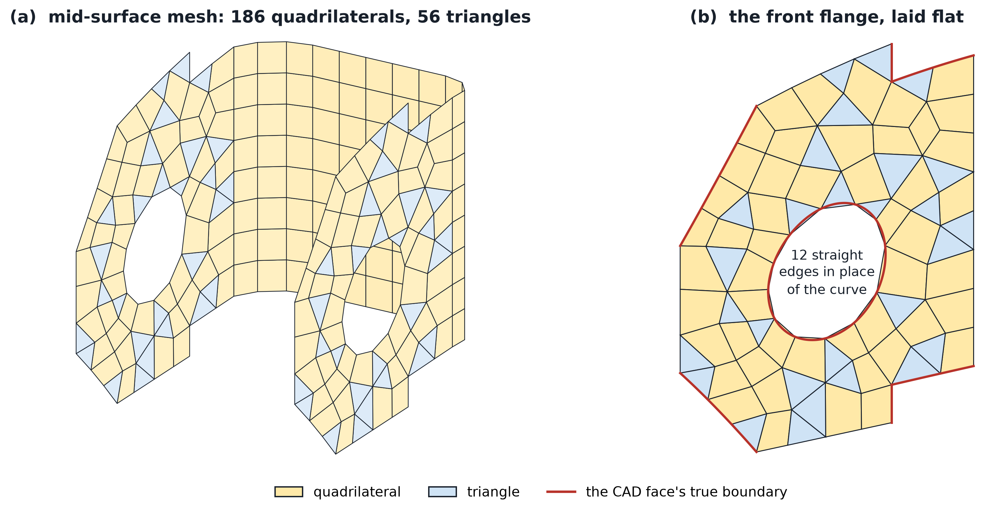
The four problems above no longer apply to this mesh. There are no cut cells or slivers, the boundary is again made up of element edges, and neighbouring faces share their nodes along each seam. The cost is the one described at the earlier in the reading, that the mesh is piecewise linear, so every curve has been replaced by straight segments. This geometry error does not decrease with better quadrature, and is only reduced by using smaller elements or curved elements. For many analyses of this bracket, an error of a few percent at the hole is acceptable. For the stress at the edge of that hole, which is where the stress is largest, it may not be.
21.2.5 An all-quadrilateral mesh of the same bracket
Many analysts prefer meshes without any triangles. Some element formulations exist only for quadrilaterals, and rows of quadrilaterals that follow the edges of a part are well suited to resolving behavior along those edges. Automatic all-quadrilateral meshing methods, such as paving, aim to produce these meshes by placing a row of quadrilaterals along every boundary and continuing inward until the rows meet. A depiction of such a quadrilateral mesh is shown below. Mesh smoothing operations are sometimes improve the quality of an initial output mesh.
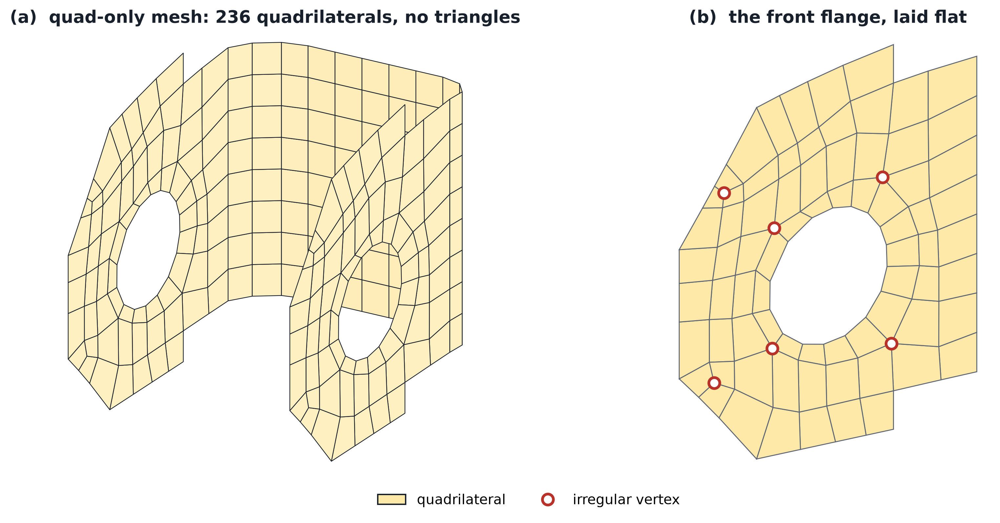
21.2.6 Comparing the two meshes
Mesh quality is usually measured element by element, using a few simple measures of shape and size. The scaled Jacobian is found by evaluating the determinant of the Jacobian (Class 13) at each corner of an element, dividing it by the lengths of the two edges that meet there, and keeping the smallest value. It is scaled to equal 1 for a square or an equilateral triangle, and it decreases toward 0 as the corners of the element become more distorted. The edge ratio is the length of the longest edge of an element divided by the length of its shortest edge, and the size ratio is the area of the largest element in the mesh divided by the area of the smallest. Both equal 1 in an ideal mesh.
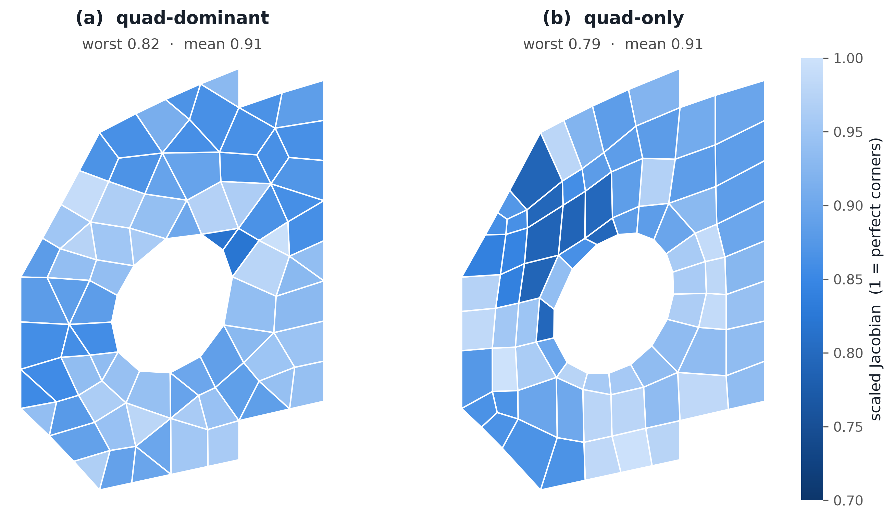
| quad-dominant | quad-only | |
|---|---|---|
| elements in the bracket | 242 | 236 |
| of which triangles | 56 | 0 |
| irregular vertices inside one flange | 16 | 6 |
| scaled Jacobian of the worst element | 0.82 | 0.79 |
| average scaled Jacobian | 0.91 | 0.91 |
| elements below 0.85 | 3% | 15% |
| largest edge ratio in one element | 2.3 | 2.5 |
| largest element’s area ÷ smallest | 5.8 | 7.4 |
By these shape measures, the two flanges are very similar. Their average element quality is the same, and the automatic quad-dominant mesh has a slightly better worst element and more uniform element sizes. This is worth noting, since an all-quadrilateral mesh is not by itself a guarantee of higher quality. However, use of triangles for certain kinds of analyses may be strongly discouraged.
The weaker elements of the quad-only mesh are all located in the upper chamfered corner, where the ring around the hole passes close to the chamfer and the three-block fill must fit into a long, thin triangle. Elsewhere, its elements are as good as or better than those of the quad-dominant mesh. Its smallest elements are in the ring around the hole, which is why its element sizes vary more.
The advantage of the quad-only mesh is its structure. It has no triangles, so element formulations that exist only for quadrilaterals can be used throughout. Its rows run parallel to every edge, which is where stress concentrations along an edge, or thin boundary layers in a flow, need to be resolved. It also has 6 irregular vertices per flange, compared with 16; the importance of this for splines is discussed at the end of this class. Frequently, though getting something with this structure requires manual intervention. This reflects the tradeoff described at the beginning of this class, where quadrilaterals and hexahedra are typically better elements but are more difficult to build.
21.3 Using the CAD basis for analysis
The typical design-to-analysis path translates the model twice:
\[ \text{trimmed CAD surfaces} \longrightarrow \text{analysis-suitable geometry} \longrightarrow \text{finite element mesh and basis}. \]
The first step includes repairing gaps along seams, removing small features that do not matter to the analysis, and deciding what fills the interior of the model. The second step is meshing, as described above. Both steps take time, and both can produce a geometry for the solver that is no longer exactly the one the designer created.
Isogeometric analysis (IGA) asks whether the spline functions that CAD already uses to describe the geometry could also be used to approximate the solution. If the CAD geometry is
\[ \underline{x}(\boldsymbol{\xi}) = \sum_A R_A(\boldsymbol{\xi})\,\underline{P}_A, \]
then an isogeometric approximation uses the same functions for the unknown field,
\[ u^h(\boldsymbol{\xi}) = \sum_A R_A(\boldsymbol{\xi})\,d_A . \]
This is the isoparametric concept of Class 9 applied in the opposite direction. There, the basis functions of an element were reused to describe its geometry; here, the basis functions of the geometry are reused to describe the field. The coefficients \(\underline{P}_A\) are control points that place the geometry in space, and the coefficients \(d_A\) are the unknowns of the analysis. These coefficients play different roles even though they multiply the same functions.
There are two main obstacles to doing this for a part like the bracket.
- A CAD model only describes surfaces. A B-rep describes the surfaces of the part and nothing inside them. Unchecking closed solid in the widget shows the midsurface, which is what a shell analysis needs, and shell analysis on CAD surfaces is one of the areas where IGA has been most successful. A three-dimensional solid analysis instead needs a map from a parametric cube onto the inside of the part, which CAD does not provide. Constructing this volumetric map is still a large part of preparing a solid model for IGA.
- Trimming. Each of the problems described for Figure 21.5 applies directly to IGA on a trimmed surface, including integration over cut cells, slivers, and boundary conditions on curves that cross cells.
Research published between 2009 and 2023 has repeatedly found that, for problems with smooth solutions, B-spline and NURBS bases give more accuracy per basis function than Lagrange bases of the same degree. However, this does not mean faster solutions in every case, since singularities, sharp gradients, trimmed cells, and the cost of quadrature and of solving the system can all reduce or remove this advantage. Several of these studies are listed under Further reading at the end of this page.
21.3.1 Continuity between elements
Every Lagrange basis used so far in this course has been \(C^0\), meaning that neighbouring elements agree on the value of the field at their shared boundary, but its slope may jump there. Splines allow us to choose how smooth the field is at each element boundary, as summarized below.
| at an element boundary | what has to match |
|---|---|
| \(C^{-1}\) | nothing: the function may jump |
| \(C^{0}\) | the value |
| \(C^{1}\) | the value and the slope |
| \(C^{2}\) | the value, the slope, and the curvature |
A B-spline of degree \(p\) can be as smooth as \(C^{p-1}\) at each boundary, and this choice can be made separately at each boundary. The widget below shows the two bases on the same elements, with Lagrange functions above and B-splines below. Below each plot is the slope of the highlighted function, which is where continuity is most visible: at a \(C^0\) boundary the slope jumps (shown by open and filled dots), at \(C^1\) the slope is continuous but has a corner, and at \(C^2\) it is smooth.
Below the basis functions, the same functions are used as a map, in the same way as the geometry map above but in one dimension. The sum \(\underline{x}(\xi)=\sum_A N_A(\xi)\,\underline{x}_A\) defines a curve in the plane. The points \(\underline{x}_A\) are Lagrange nodes on the left and B-spline control points on the right, and each can be dragged. Each element boundary on the two curves is labelled with the angle through which the curve turns there.
Things to try:
- Support. With the default settings, click a Lagrange function and then a B-spline function near the middle. The shaded band shows where each is nonzero. The quadratic B-spline extends across three elements, while a Lagrange function never extends past the elements that touch its node.
- Number of functions. Five quadratic elements require 11 Lagrange functions but only 7 smooth B-splines. Each smoothness condition at a boundary removes one function, so the number of B-splines is \(p+1\) plus, for each interior boundary, \(p\) minus its continuity.
- Slopes. Set the degree to 3 and observe the slope of a B-spline as one boundary is made less smooth. The slope is smooth at \(C^2\), has a corner at \(C^1\), and jumps at \(C^0\).
- Every boundary \(C^0\). The number of B-splines becomes the number of Lagrange functions. The two bases then describe exactly the same set of functions, and on each element the B-splines are the Bernstein polynomials described in the next section.
- One boundary at \(C^{-1}\). The B-spline basis separates there into two independent pieces, as if it were two separate patches.
- Meaning of a coefficient. A Lagrange function equals 1 at its own node and 0 at every other node, so its coefficient is the value of the field there. Most B-splines never reach 1, and several are nonzero at every point, so a B-spline coefficient is generally not the value of the field at any particular point.
- Drag a B-spline control point. The curve moves smoothly, and only along the shaded part, which is the support of the basis function associated with that point. Every boundary still reads 0.0°, since a curve built from \(C^1\) functions cannot form a corner, regardless of where its control points are placed.
- Drag a Lagrange node. Its elements move, and corners appear at the neighbouring element boundaries. Even before any node is moved, the Lagrange curve has small corners. Its nodes lie exactly on a smooth arch, but an arch is not a piecewise quadratic, so the pieces meet at slightly different angles.
- Put the Lagrange nodes on the B-spline curve. Every corner drops to 0.0°, and the two curves become identical. The Lagrange functions can represent any curve that the B-splines can represent, but nothing in the Lagrange basis keeps the curve smooth, so moving any node brings the corners back.
- Lower one boundary to \(C^0\), then to \(C^{-1}\). The B-spline curve does not move. Instead, it gains a control point at that boundary. Dragging that point allows the B-spline curve to form a corner there or, at \(C^{-1}\), to separate.
21.3.2 Bernstein polynomials
On a single element, the degree-\(p\) Bernstein polynomials
\[ B_i^p(t)=\binom{p}{i}\,t^i(1-t)^{p-i}, \qquad i=0,\ldots,p, \qquad 0\le t\le 1, \]
are another basis for the same polynomials as the degree-\(p\) Lagrange functions. Any cubic can be written as a combination of the four cubic Lagrange functions or as a combination of the four cubic Bernstein polynomials. Only the coefficients change, in the same way that the components of a vector change when the coordinate axes are rotated.
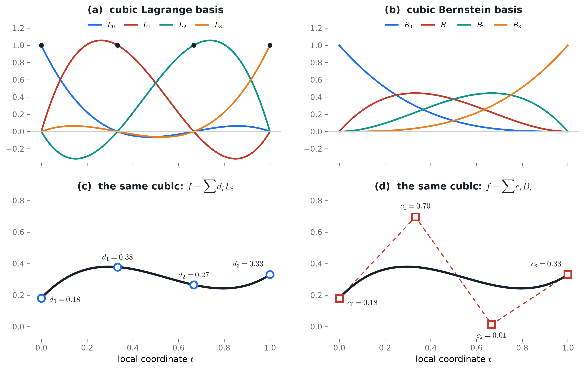
Two properties make Bernstein polynomials useful. First, they are never negative and they sum to 1, so a curve built from them stays inside its control polygon, which is one reason they are used in CAD. Second, they are exactly the basis functions of a \(C^0\) B-spline: setting every boundary in the widget above to \(C^0\) makes the B-splines on each element exactly these polynomials. This connection, called Bézier extraction, allows a spline code to provide each element with a Bernstein basis and a small matrix, and then to assemble element by element in the same loop as a standard finite element code.
21.3.3 Cubic Hermite polynomials
Splines are one way to obtain \(C^1\) continuity. An older approach, used in beam theory, makes the slope itself an unknown at every node. The Euler–Bernoulli beam weak form contains second derivatives (\(m=2\)), so the slope of the deflection must not jump between elements. A cubic Hermite element uses the deflection \(w\) and the rotation \(\theta = dw/dx\) at each end,
\[ w^h(t)=h_{00}(t)\,w_1+L\,h_{10}(t)\,\theta_1 +h_{01}(t)\,w_2+L\,h_{11}(t)\,\theta_2, \qquad 0\le t\le 1, \]
where \(L\) is the element length and
\[ \begin{aligned} h_{00}&=2t^3-3t^2+1, & h_{10}&=t^3-2t^2+t,\\ h_{01}&=-2t^3+3t^2, & h_{11}&=t^3-t^2. \end{aligned} \]
Neighbouring elements share both \(w\) and \(\theta\) at their common node, so the deflection is \(C^1\).
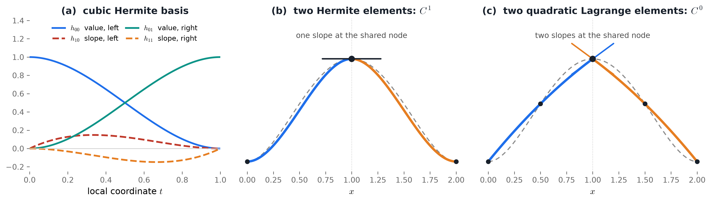
Hermite elements work well for beams and for rectangular plate elements, but they do not extend well to general shapes. In two and three dimensions, matching slopes across an element edge requires derivative unknowns in several directions at every node, including mixed derivatives, and these only fit together easily on rectangles. On curved or irregular elements, they become very difficult to match. Splines obtain their smoothness differently: rather than adding derivative unknowns, each function overlaps several elements.
21.3.4 From a Class 11 element to a spline patch
In Class 11, a basis function on a quadrilateral was defined as the product of two one-dimensional functions,
\[ N_A(\xi,\eta)=N_a(\xi)\,N_b(\eta). \]
A B-spline patch is built in the same way, from one-dimensional B-splines,
\[ R_A(\xi,\eta)=B_a(\xi)\,B_b(\eta). \]
The difference lies in the support of the one-dimensional factors. A Lagrange factor is nonzero on one element, or on two if its node lies on an element boundary. A B-spline factor extends across several elements of the patch. The widget below shows either basis over the same grid, with the two one-dimensional factors drawn on the back walls as in Class 11. The dark curves show the function along each element line, which is where a \(C^0\) function has a crease. Drag to rotate the view, and click a dot in the right-hand view to select a function.
Below that, the same functions are again used as a map, this time from the square onto a curved region of the plane, \(\underline{x}(\xi,\eta)=\sum_A R_A(\xi,\eta)\,\underline{x}_A\). The region initially is the quarter annulus of Classes 12, 13, and 20. The points \(\underline{x}_A\) belong to whichever basis is selected at the top of the widget (Lagrange nodes or B-spline control points), and each can be dragged. Red marks the locations where a grid line forms a corner as it crosses an element line.
Things to try:
- A Lagrange corner function (the default). It has creases along both element lines through its node, since each of its one-dimensional factors has a corner there.
- Switch to B-spline. The widget stays at the same location on the patch. The B-spline function covers more cells and crosses the dark curves without a crease.
- Number of functions. On \(3\times3\) quadratic elements, the Lagrange basis has \(7\times7=49\) functions and the \(C^1\) B-spline basis has \(5\times5=25\), which is the one-dimensional reduction from the previous widget, squared.
- Lower the spline continuity to \(C^0\). The number of functions returns to 49, and the creases reappear.
- Drag a Lagrange node at an element corner. The grid lines crossing the neighbouring element lines now form sharp corners there. Even before any node is moved, the Lagrange grid has small corners, since its nodes lie exactly on circles and a circle is not a piecewise quadratic.
- Switch to B-spline and drag a control point. The region bends smoothly over a wider area, and no grid line forms a corner.
- Put the Lagrange nodes on the B-spline region. Every corner disappears, since the Lagrange functions can represent exactly the same region. However, the Lagrange basis does not keep the region smooth, and moving any node brings the corners back.
- Lower the spline continuity to \(C^0\). The region does not move, but control points appear on the element lines, and dragging one of these can now form a corner in the spline grid as well.
A tensor-product spline is defined on a single parametric square. This is well suited to a single CAD surface, such as one flange of the bracket, since mapping the square through \(\underline{x}(\xi,\eta)\) places the basis functions on the surface without changing which functions overlap which. A part made of several surfaces requires several patches glued together, and how well this can be done depends on the layout of the mesh.
21.4 Quadrilateral mesh topology and splines
A tensor-product spline needs a grid that can be indexed by two coordinates, by stepping in either \(\xi\) or \(\eta\). A structured quadrilateral mesh has this property, but an arbitrary quadrilateral mesh generally does not.
At a regular interior vertex, four quadrilaterals meet. At an extraordinary vertex, a different number meets, such as three, five, or six. On the boundary, a regular vertex has two quadrilaterals, or one at a corner. A separatrix is obtained by starting at an irregular vertex, following one of its edges into the mesh, and continuing straight through every regular vertex (leaving by the edge opposite the one by which it entered) until reaching the boundary or another irregular vertex. Cutting the mesh along every separatrix leaves blocks that can each be indexed by two coordinates. These blocks are the patches that a tensor-product spline would need.
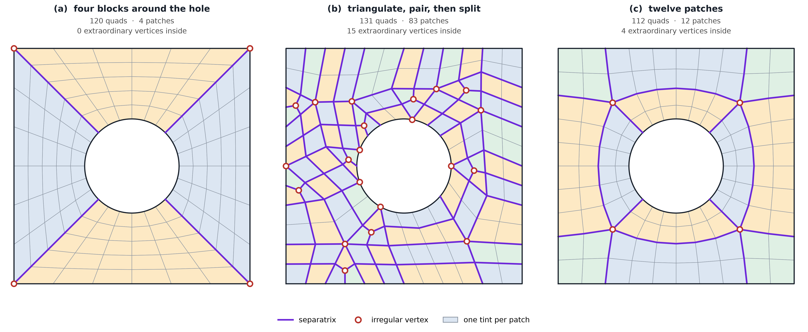
Mesh (b) is a (moderately) acceptable mesh for standard \(C^0\) Lagrange elements. A Lagrange code only requires neighbouring elements to agree on the values at their shared nodes, and never needs to know which direction is “straight through” a vertex. Raising the Lagrange polynomial degree does not change this.
Smooth splines are different. Their functions are intended to extend across element boundaries, and at a valence-3 or valence-5 vertex there is no unique way to continue a row of elements straight through. Mesh (a) can support four patches of smooth splines, glued along four seams. Mesh (b) separates into dozens of small patches. Each seam between patches is a location where continuity must be reduced or specially enforced, so on mesh (b) most of the smoothness that makes splines attractive is lost. A quadrilateral mesh can therefore be entirely suitable for \(C^0\) finite elements and still be a poor starting point for a standard B-spline analysis.
Extraordinary vertices are not problematic in themselves; what matters is how many there are and where they are located. Mesh (c) has four, placed deliberately at the corners of a ring of quadrilaterals around the hole, and their separatrices connect to one another rather than extending across the plate. The result is twelve well-structured patches. This is more seams than mesh (a) has, but they are long and regular, which multi-patch spline codes handle routinely. The cost is at the four valence-5 vertices, where smoothness must be reduced or specially constructed. Mesh (c) also has the best elements of the three meshes.
| (a) four blocks | (b) triangulate, pair, split | (c) twelve patches | |
|---|---|---|---|
| patches | 4 | 83 | 12 |
| extraordinary vertices inside | 0 | 15 | 4 |
| scaled Jacobian of the worst element | 0.71 | 0.44 | 0.91 |
| average scaled Jacobian | 0.87 | 0.88 | 0.98 |
| largest edge ratio in one element | 2.8 | 3.3 | 1.5 |
| largest element’s area ÷ smallest | 2.8 | 4.0 | 3.7 |
The weakest elements of mesh (a) are at the corners of the plate, where two quadrilaterals share a single right angle and each has a 45° corner. Smoothing cannot fix this, since it is determined by the layout. Mesh (c) gives each corner its own block. Its one weakness is element size: its smallest elements, around the hole, are a few times smaller than its largest, which is a slightly wider spread than in mesh (a).
This is an active area of research. Constructions such as T-splines, hierarchical and locally refined splines, subdivision surfaces, and spline spaces built specifically around extraordinary vertices all aim to preserve smooth basis functions on meshes with arbitrary layouts.
Note that separatrices describe the topology of a mesh, not its quality. A well-structured separatrix layout can still produce a poor spline if its cells are folded, highly skewed, or crowded together, just as a Lagrange mesh can. The separatrices indicate whether a standard tensor-product patch layout is natural, while the quality of the analysis still depends on the Jacobians of Class 13 and on how well the basis can approximate the solution.
21.5 Summary
- CAD describes a part as trimmed surfaces glued together. This is an exact description of the shape, but cut cells, slivers, and seams make it difficult to use directly for analysis.
- Meshing addresses these problems at the cost of geometric accuracy. A mesh of the trimmed surfaces has no cut cells, but it replaces every curve with straight edges.
- Geometry and field have separate roles. IGA uses the same functions for both, but control points place the geometry, while the coefficients \(d_A\) are the unknowns of the analysis.
- Continuity should be chosen, not maximized. Smoothness is beneficial for smooth solutions and for weak forms with higher derivatives, such as the beam. It should be reduced where the solution is not smooth, such as at material interfaces, cracks, and sharp corners.
- An exact surface does not define a volume. CAD surfaces can be used directly for shell analysis, but solid analysis still requires a volumetric map or a mesh.
- Fewer basis functions does not necessarily mean less computation. Smooth bases can give lower error per unknown, but each function overlaps more elements, so the matrix is less sparse and each element is more expensive to integrate.
Overall, Lagrange finite elements handle complicated geometry well by keeping continuity local, while isogeometric methods invest more effort in geometry and topology so that smooth, CAD-quality basis functions can provide more approximation power across element boundaries.
21.5.1 Further reading
- Hughes, Cottrell, and Bazilevs (2005), the original isogeometric-analysis paper
- Cottrell, Hughes, and Bazilevs (2009), Isogeometric Analysis
- Evans, Bazilevs, Babuška, and Hughes (2009), on the accuracy of smooth splines per degree of freedom
- Marussig and Hughes (2018), a review of trimming in isogeometric analysis